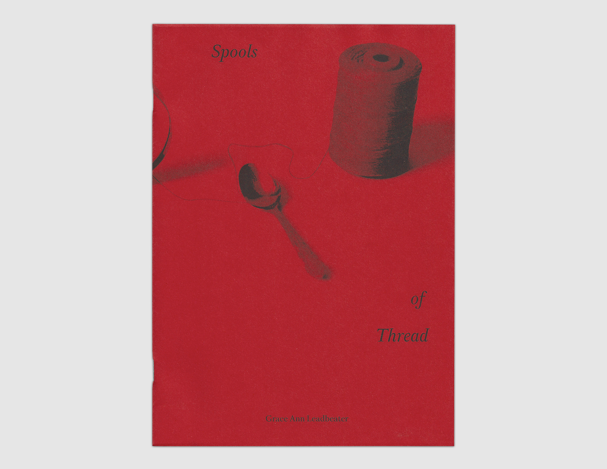
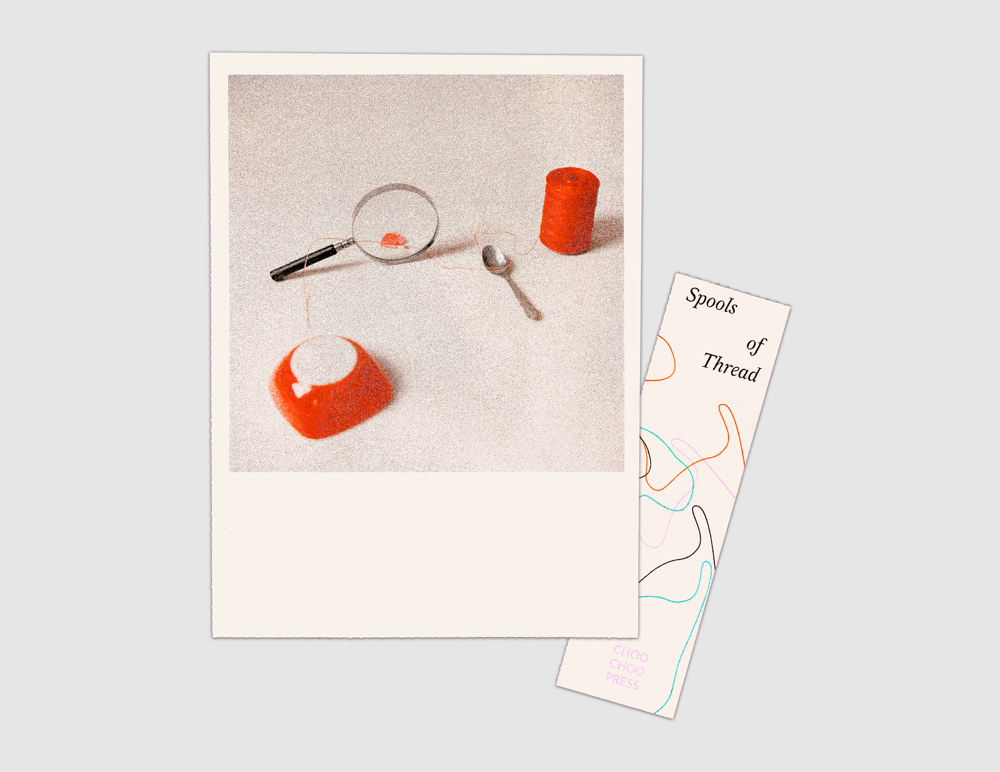
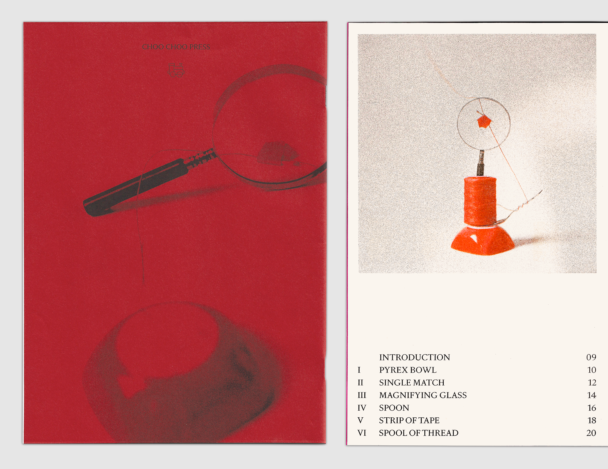

Spools of Thread
by Grace Ann Leadbeater
$15
Shop
- 2026
- 9.75x7in
- 22 pages
- 4-color riso
- Printed on French paper
- Saddle stitched
- Edition of 75, 1st edition
An unspooling and reconfiguring of things remembered.
This artist book deconstructs a still life, examining five separate objects and the memories they invoke. In the process, echoes of childhood memories float in, imbuing each of these everyday objects with new weight and reverence. Two separate still lifes—with two different compositions—start and end the book, giving us a chance to encounter each object on its own and in relation to one another. A tender reflection on all the strange objects we’ve gathered and discarded along the way. Complete with a Risograph still life print and a detachable bookmark.
Grace Ann Leadbeater is an artist and educator invested in words, pictures, and bookmaking. Most recently, styling her own still lifes has led her to work as a prop stylist. She holds a Bachelor of Fine Arts in photography from the Savannah College of Art and Design as well as a Master of Fine Arts in nonfiction writing from Columbia University. Grace Ann grew up in Central Florida and lives in Brooklyn, New York.


